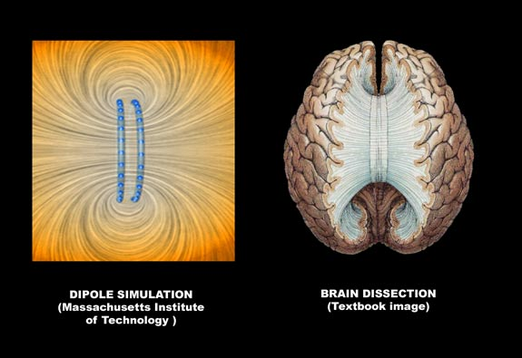
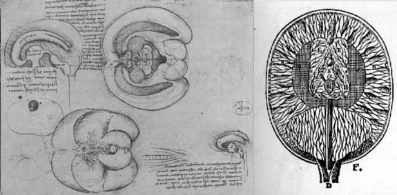

WHATS THIS DIPOLE NEUROLOGY ALL ABOUT ?
This project proposes that the entire cortex has a complex dipole structure. If you do not know what a dipole is, it would be recommended you read the short beginners tutorial first. (link above "What is a dipole")

Can you spot the similarities between these two images ?
Dipole neurology, the concept of electromagnetic structure as the key to unlocking brain structure, is about seeing the structure, function and disorder of the brain in the context of its evolution with natural laws of physics. The current summary of the project is here.
RESEARCH SCOPE AND RELEVANCE
The dipole view of the brain, is not like conventional areas explored in neuroscience, such as frontal lobe wiring, social instincts, or finding a new neural protein. It is an overarching technical view, that begins with cognitive neuroscience and goes of into contraversial territory quite far removed from anywhere neuroscience has been previously.
If the brain is looked at from the view of a complete electromagnetic formation and its parts and structures as part of that, then the disorders, development and functions of the brain can be reframed in a completely new light. This way of thinking about the brain would be similar to the geoscience approach to our planet (also a complex dipole) where the oceans, geology, ecosystem and ionosphere are seen as components of a complex electromagnetic system.
Since the idea here is to take a large scale look through the whole brain, it is obviously not possible to be so rigorous, in every part. Current medical research dedicates teams and massive resources just to each of many thousands of neural components. Each of these studies produces more questions, more proteins etc. So science is still not that receptive to projects that propose they can put a lof of stuff together. The emphasis is still on a break it all apart approach but looks to be changing gradually towards systems integraton.. Now is a great time to start puting these broken pieces back together. Given these limitations there are bound to be errors in a project like this. The model has now survived several peer reviews, breaking attemps by rival theorists and scrutiny at a high level neuroscience conference. Most of the suriving facets of the dipole neurology project have been through several iterations with years of reflection between them. That is the project had been dropped and taken up with nothing more than the approach, well lets see what still stands. Even with such a throwaway consideration it still seems like the model can unravel hidden secrets of neurodevelopment, provide a new model for current mysteries in neuroscience, and finally give a new map of the whole brain at a physics / structural level.
PREDICTED PROBLEMS WITH THIS APPROACH
I would like to make things easier for anyone reading this, so provide easy version videos and tutorials, and feel i should answer the following problems.
1. The dipole approach bypasses the reality of the brains complexity.
As mentioned above one reason medical science is unable to, or having difficulty in recognising this approach is that the brain is microscopically complex, and the majority of our knowledge in neurosciences is concentrated in gaining understanding of the brain in fragments within it's full complexity. Although this models override this complexity and miss out non mammilian brain parts, like the, hypothalamus and spinal cord, in comparison to other models for the brain, it's quite realistic for going at a very large scope as, the dipole models include the vast majority of the skulls newly developed content. White matter, grey matter, neurons, receptors, ventricles, all cortical and limbic structures. However the model is still abstract and oversimplified and will be some time before the project finally gets to the level of fitting completely with whats known of brain complexity
2. A "so what" reaction..where would it get us anyway ?
Initially i would have agreed. It took quite a bit of persistance to complete the model by approaching the wierd shaped limbic system, and trying to understand how the brain works as an interaction between the limbic and cortical systems. Only after completion, I was able to say, that this approach could be giving a powerfull explanatory approach to neurodevelopment and perhaps the evolution of the whole brain system all the way back to the development of symmetrical nervous systems about 700,000,000 years ago. Not what i expected when i started on this project at all.
3. A "can't prove that even if were true" reaction. It's too complex a model to falsify
The result of sidelining this approach of investigating larger structures in their electromagnetic context, is that the brain has been broken apart into many thousands of pieces in a jigsaw puzzle, and we have managed to put a fraction of the pieces back together. This theory attempts to give an intrinsic understanding of the brain structure, functions and abnormalities, by putting all of the pieces back together and looking at the whole brain as a system. If this is something which cannot be falsified then we should really be looking at whether falsification works for complex systems.
I approach this question here “The importance of systems theory in this project”

LEFT : Leonardo Da Vinci, made contributions to neurophysiology by taking a creative approach based on simplicity, vision and experience. RIGHT : Descartes sought to decipher the brain by it’s symmetry. Back then they didnt know about dipole and quadrapole structures, and since then these kind of whole system visual approaches have been discarded.
ABOUT THIS SITES TECHNICAL LEVEL
I have tried to make this site as easy to understand as possible, hopefully enough that an interested layperson can grab the concept, from the videos and tutorials. For more information on whats in the site click "site map" in the menu bars.
"Dipole Neurology" is probably one of the most extreme simplifications of complex Neuroscience availiable. The test of whether there is truth in this simplification is to expose it to all the brain's complexity, and see if the dipole approach can present a strong case that it does simplify or answer increasing amounts of questions about the complex brain. That requires that I take the pieces of the neuroscience puzzle and see how easily they fit into the dipole framework.. Unfortunately that can get pretty complicated, so following this work at times needs higher school level grasp of systems theory and physics, with a degree level understanding of neuroscience, chemistry and biology.
FEEDBACK AND ME GETTING IT WRONG
My challenge to critics is that you falsify the theory, by presenting a satisfactory non dipole model that can equally simplify the phenomena I provide evidence for. That is give a non-electromagnetic explanation for how brain structure ends up looking so much like multipole structures. Especially the cortex, and how all cortical features appear to be so magnetic in origin. Currently no scientist and critic of this approach has been able to explain this away. However it will be some time till ethical methods can be devised to test this theory. The mechanism proposed for magnetic formation of the cortex for example is ion flow through the connexins of the radial glial scaffolding, that are only present in the developing brain.
The project will be a creative commons project. in the style of the emerging research climate which tends towards open collaborations. Contributors to the project are going to have a seperate page made for them soon.
However so we are not wasting our time and patience, I would ask :
1. That you understand the central ideas well at a technical level. (If i do not communicate this well, please let me know)
2. Have at least read a summary of the evidence in the sections "The theory" and understood what the evidence i present is trying to say.
I hope you find this subject and the research as interesting as i did. If you are interested and having problems understanding, please contact me. From this feedback i will get an idea what to revise, and what to put on the FAQ page. If you have smaller suggestions or feedback post at the blog. Details for those are in the bars above and below.
Felix Lanzalaco 30/09/2009
DISCLAIMER : This work is my own research. It can be shared and developed under the creative commons licence. (see bottom of page) If you are a student or employee in the sciences or healthcare you should seek your seniors approval, before using it. I am not religious or connected to any religious, political or business organisation. I do not approve this work for unscientific use. As far as is practical this is a non-profit making project. |